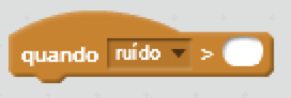

Executa um script quando o atributo selecionado (ruído, valor do cronômetro, movimento do vídeo) ultrapassar um valor especificado

Você pode selecionar qualquer atributo do menu suspenso.


Após o cronômetro chegar em 10 segundos, o script será executado.


Quando o movimento do vídeo sobre o ator ultrapassar 10, o script é executado.